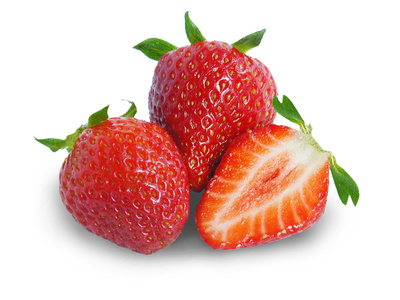

Strawberries (Fragaria x ananassa)

Mating & Breeding System: The cultivated strawberry is a hybrid of North and South American wild strawberries. One was selected for flavour, the other for large size. Many cultivars are self-fertile with hermaphrodite flowers, each of which is actually a large group of tiny flowers clustered on a receptacle. In this respect, the flowers are similar to those of Rubus, but in strawberry the receptacle itself develops into the fruit tissue, with the seeds borne on the outer surface. The pistils often mature well before the anthers on a given receptacle, but when the anthers do mature they can self-pollinate any remaining ovules.
Some individual flowers on a receptacle may be sterile (due to few or no stamens, or stamens that produce little or no pollen, or sterile pistils). Breeding programs have largely corrected this problem, but in cases where it still exists, insect pollination is essential to transfer pollen.
Pollination in commercial fields likely results from a combination of wind and pollinator action delivering both self- and cross-pollen. It is not clear how the different types of pollen can affect fruit development.
Pollination, Quality & Yield: Full pollination of all fruits on a receptacle is required for the best quality product. Open pollination of flowers by insects will increase fruit set, yield, and quality of fruit. The more flowers on the receptacle that are pollinated, the larger the fruit. Unpollinated flowers can lead to misshapen berries. As many as 20 bee visits to each receptacle is required to fully pollinate all of the flowers. Additional increases in final berry weight can be seen with as many as 60 visits. This amount of pollinator activity may require seven or more days.
If pollinator activity is high (especially bumble bees, which can forage aggressively) flower damage and deformed fruit can become an issue. Honey bees do an adequate job when wild bees are uncommon. When wild bees are present, honey bees play a complementary role, with honey bees pollinating the apical flowers on the receptacle, and smaller wild bees working the basal flowers. Syrphid flies, particularly large-bodied species such as the drone flies (Eristalis), have also been observed effectively pollinating strawberry in the field.
Pollination Recommendations: Although some strawberry cultivars are self-fertile, the ability of self-pollination to produce marketable fruit is not clear. Some evidence suggests that self-pollen can have a negative effect on fruit size, weight, and shape. Thus, the use of pollenizers (different cultivars with abundant staminate flowers) is encouraged, at a minimum ratio of 1:5 with the primary cultivar. Growers should pay close attention to the availability of pollinators, but unless fields are a large monoculture (e.g., 150-200 m across or more)or lack wild pollinator populations, it should not be necessary to supplement with honey bees.
If using bees, recommended pollinator rates are vague, ranging from 0.5-2 colonies per hectare to 20 or more in some cases. Further research on optimal stocking rates in Ontario strawberry crops is required. Note also that strawberry flowers may be less attractive to honey bees than competing weed blossoms; mowing of adjacent vegetation during crop bloom may be necessary. In greenhouses, the use of bees or pollinating flies (drone flies, blow flies) is necessary to produce an acceptable crop in terms of fruit size and weight, and the proportion of misshapen fruit.
References
Allen, W. W. & Gaede, S. E. 1963. Strawberry pollination. Journal of Economic Entomology 56: 823-825.
Antonelli, A.L., Mayer, D.F., Burgett, D.M., & Sjulin, T. 1988. Pollinating insects and strawberry yields in the Pacific Northwest. American Bee Journal 128:618-620.
Bagnara, D. & Vincent, C. 1988. The role of insect pollination and plant genotype in strawberry fruit set and fertility. Journal of Horticultural Science 63:69-75.
Chagnon, M., Gingras, J., & De Oliveira, D. 1989. Effect of honey bee (Hymenoptera: Apidae) visits on the pollination rate of strawberries. Journal of Economic Entomology, 82: 1350-1353.
Chagnon, M., Gingras, J., & De Oliveira, D. 1993. Complementary aspects of strawberry pollination by honey and indigenous bees (Hymenoptera). Journal of Economic Entomology 86:416-420.
Colbert, S. & De Oliveira, D. 1992. Cross-pollination and production of 4 cultivars of strawberry, Fragaria xananassa. Canadian Journal of Plant Science 72:857-861
Free, J.B. 1968. The pollination of strawberries by honeybees. Journal of Horticultural Science 43:107-111.
Kevan, P.G. 1988. Pollination,crops and bees. OMAFRA publication 72.
Scott-Dupree, C.D., Winston, M., Hergert, G., Jay, S.C., Nelson, D., Gates, J., Termeer, B., & Otis, G. 1995. A guide to managing bees for crop pollination. Canadian Association of Professional Apiculturists, Aylesford NS.
Zebrowska, J. 1998. Influence of pollination modes on yield components in strawberry (Fragaria x ananassaDuch.). Plant Breeding 117:255-260.